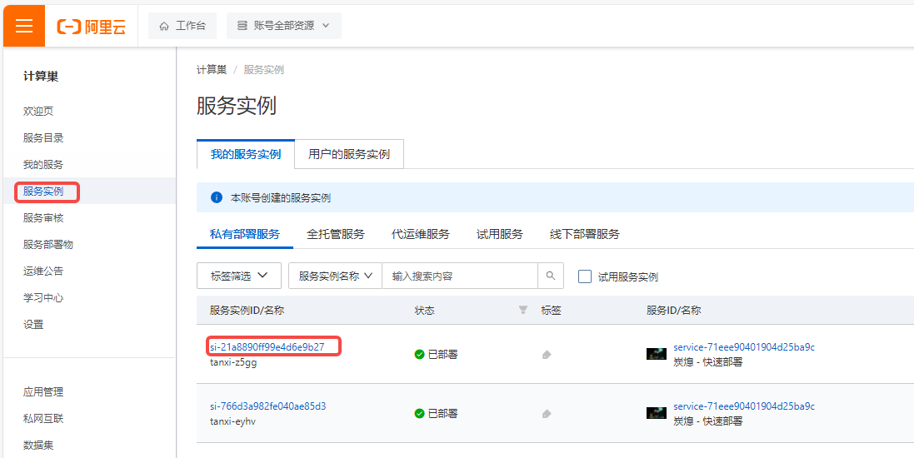
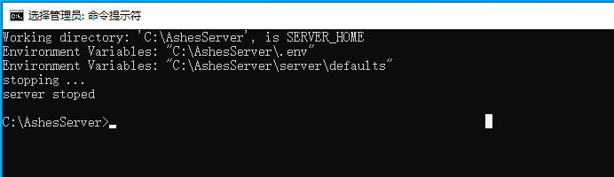
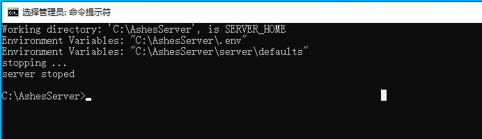

炭熄（Ashes）服务实例部署文档
概述
炭熄是一款全球首发的中式民俗生存冒险SOC游戏，以其独特的开放阴间世界概念，带领玩家进入一个完全由程序随机生成的广袤阴间世界，在这里可以和好友联机寻找瑶山背后所发生的故事。本文介绍如何在阿里云计算巢控制台，快速部署炭熄联机服务，实现和朋友一起联机游戏。
预计部署时间5分钟，有任何问题请查看下方的QQ群，进群交流～
《炭熄》官方交流1群：861071677
《炭熄》官方交流2群：933262638
计费说明
炭熄联机服务在计算巢上的费用主要涉及：所选vCPU与内存规格、磁盘容量、公网带宽 计费方式包括：包年包月 预估费用在创建实例时可实时看到。
创建云服务器
第一步：选择配置
- 服务实例名称（如无特殊要求，保持默认即可）；
- 选择部署地域（可以选择离自己最近的城市，如无特殊要求，保持默认即可）；
- 选择付费时长（目前只支持包年包月）
- 选择配置，这里提供了几款配置供大家选择：
| 套餐名 | 说明 |
|---|---|
| 支持最多10个玩家 | 2核8G，5M带宽不限流量 |
| 支持最多10个玩家 | 4核16G，10M带宽不限流量 |
| 支持10-16个玩家 | 8核32G，10M带宽不限流量 |
| 自定义套餐 | 可自由选择ECS配置，适合高阶DIY玩家 |
5. 配置服务器密码（记住你的密码，后面要用）； 6. 配置可用区（如无特殊要求，保持默认即可）。 7. 在游戏基础设置栏中配置联机服务的参数（不修改则使用默认值）。
8. 在游戏高级设置栏中配置联机服务的参数（不修改则使用默认值）。
配置完成之后，点击下一步，确认提交订单。
第二步：创建服务
- 在服务确认页面，勾选同意服务条款，点击
立即创建，后面就是付款流程。
 2. 当出现提交成功提示，说明服务已经开始创建，点击“去列表查看”，可以看到服务正在部署中。
2. 当出现提交成功提示，说明服务已经开始创建，点击“去列表查看”，可以看到服务正在部署中。

第三步：进入实例详情
- 服务大约2分钟即可完成创建，创建完成后如果开启了自动更新游戏服务器选项时，游戏更新过程会消耗大约5分钟
-
到这一步的时候，炭熄的服务端安装程序已经预置在服务的镜像里了，无需手动复制，非常方便。
-
当服务的状态变成“已部署”，点击服务实例ID进入服务详情。
 4. 看到“炭熄服务器地址端口”，这就是你搭建服务器的IP地址了，复制这个地址用于下一步操作。
4. 看到“炭熄服务器地址端口”，这就是你搭建服务器的IP地址了，复制这个地址用于下一步操作。

登录游戏
前置条件：您首先需要在Steam购买炭熄（Ashes)。
1. 登录您的Steam账号。
2. 在“库”中找到炭熄，并开始游戏。
3. 如果你的游戏平台选择的是steam，在游戏内点击加入世界,然后点击社区按钮，等待刷新一段时间后选择你的游戏服务器，点击连接进入游戏
4. 也可以直接点击添加服务器按钮，输入你的服务器IP以及端口号加入游戏。

至此，您已经成功搭建了炭熄 Dedicated Server ，请和您的朋友在此中一起畅快游玩吧～
Windows服务器
连接服务器
- 在计算巢服务点击实例，在资源页找到资源类型为
实例的公网IP

 2. 在windows的搜索栏输入
2. 在windows的搜索栏输入mstsc,打开远程桌面连接程序
 3. 在
3. 在计算机栏输入上面找到的服务器公网IP,用户名栏输入Administrator,然后点击连接
 4. 输入你在创建服务时输入的实例密码 ，然后点击
4. 输入你在创建服务时输入的实例密码 ，然后点击确定

- 在资源管理器中进入
C:\AshesServer,可以看到服务器的工作目录

World 目录为游戏世界的存档目录
.env 文件为游戏的设置文件
server 目录为游戏的安装目录
关于服务器的介绍在C:\AshesServer\server目录下查看Ashes Dedicated Server Manual_zh.pdf文档获取更多细节。
替换存档
- 按照上面的步骤进入游戏服务器实例。
- 在搜索栏中输入
cmd打开命令提示符
 3. 输入
3. 输入cd C:\AshesServer然后按回车进入工作目录，这一步很重要，不能省略哦~

- 输入
server\start_server.bat stop然后按回车关闭游戏服务器，
 

-
删除或者备份在
C:\AshesServer目录下Worlds文件夹，将你上传上的存档放在这个目录下，保证文件夹的名字也是Worlds -
再次重复
2,3步骤， 打开cmd,输入cd C:\AshesServer - 输入
server\start_server.bat start然后按回车启动游戏服务器

- 游戏服务器启动过程中可能会有更新的操作，根据网络情况的不同会有几分钟左右的更新时间，请耐心等待~

- 当看到提示 server started 时，表示服务器已经成功启动
不要关闭命令提示符窗口，否则游戏服务器会被关闭，重要的事情说三遍!
不要关闭命令提示符窗口，否则游戏服务器会被关闭，重要的事情说三遍!
不要关闭命令提示符窗口，否则游戏服务器会被关闭，重要的事情说三遍!
- 到此，整个游戏存档就替换完毕啦~
其他操作
- 进入计算巢中实例的
运维管理页签，这里提供了一些基础游戏服务器操作
重启游戏服务器：关闭并重新启动游戏服务器
更新游戏服务器：关闭然后更新游戏服务器，更新完毕后会启动游戏服务器
清除存档：关闭游戏服务器，然后清除存档，清除完毕后会启动游戏服务器
下载存档：关闭游戏服务，然后会将游戏世界存档打包成zip文件，打包完毕后会启动游戏服务器。
下载路径查看输出日志。

上传存档：只是上传选择的文件到游戏的工作目录C:\AshesServer, 替换存档的操作可以见上方的替换存档步骤
常见问题
部署服务时出现部署失败
 这种情况一般是网络波动导致更新游戏服务器时间过长导致部署时间超时
这种情况一般是网络波动导致更新游戏服务器时间过长导致部署时间超时
解决方案：
点击重新部署，然后选择使用原参数部署，点击确定就可以继续部署。通常情况下这个问题可以通过这种再次部署的操作而得到解决。